Miami Travel Guide
Metropolis located in southeastern Florida is a major tourism hub due its beaches, warm and mild climate all year, and the city's frequent portrayal in music, film, and popular culture has made the city and its landmarks recognizable worldwide, ranking it second in the country after New York City
Top Locations

Places to See in Miami
Antorcha de la Amistad / The Torch of Friendship
Monument located on Biscayne Boulevard in Downtown Miami, built in 1960 to signify the passageway for immigrants coming from Latin America and the Caribbean
Bal Harbour Shops
Open-air shopping mall in Bal Harbour, a suburb of Miami, Florida, known internationally for its retail
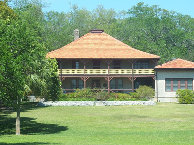
Ebyabe, CC BY-SA 3.0, via Wikimedia Commons; Image Size Adjusted

Barnacle Historic State Park
5-acre (2.0 ha) Florida State Park in the Coconut Grove neighborhood of Miami, Florida, built in 1891, is the oldest house in its original location in Miami-Dade County
Bayside Marketplace and Park
Two-story open air shopping center offering live music daily, restaurants, bars, family events, and picturesque settings and 32-acre public, urban park
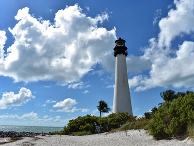
Tamanoeconomico, CC BY-SA 4.0, via Wikimedia Commons; Image Size Adjusted
.jpg){kind=link}
Bill Baggs Cape Florida State Park
Recreation Area occupies approximately the southern third of the island of Key Biscayne and includes the Cape Florida Light, the oldest standing structure in Greater Miami
Tamanoeconomico, CC BY-SA 4.0, via Wikimedia Commons; Image Size Adjusted
Biscayne National Park
National Park preserves Biscayne Bay and its offshore barrier reefs with the offshore portion of the park including the northernmost region of the Florida Reef, one of the largest coral reefs in the world
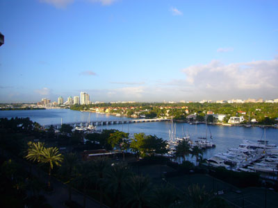
2GroveIsleroo, CC BY-SA 4.0, via Wikimedia Commons; Image Size Adjusted

Cape Florida Lighthouse
A historic lighthouse complex featuring panoramic coastal views, preserved nineteenth-century architecture, scenic beaches, and one of the oldest standing structures in South Florida.
2GroveIsleroo, CC BY-SA 4.0, via Wikimedia Commons; Image Size Adjusted
Cocunut Grove
Oldest continuously inhabited neighborhood of Miami, Florida with numerous restaurants, open air and streetside cafes, and several waterfront restaurants and bars
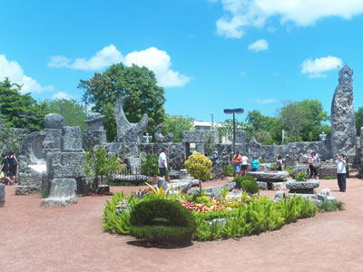
Ebyabe, CC BY-SA 3.0, via Wikimedia Commons; Image Size Adjusted

Coral Castle
Oolite limestone structure comprised of numerous megalithic stones, mostly limestone formed from coral, each weighing several tons
Coral Gables
Located southwest of Downtown Miami, Coral Gables is a Mediterranean-themed planned community and was one of the first planned communities, with city's architecture almost entirely Mediterranean Revival style
2GroveIsleroo, CC BY-SA 4.0, via Wikimedia Commons; Image Size Adjusted
Crandon Park
A large waterfront park featuring sandy beaches, recreational facilities, nature areas, picnic sites, marinas, and expansive views of Biscayne Bay.
2GroveIsleroo, CC BY-SA 4.0, via Wikimedia Commons; Image Size Adjusted
Deering Estate
A historic waterfront estate featuring grand Mediterranean Revival architecture, tropical gardens, archaeological sites, nature preserves, and sweeping views of Biscayne Bay.

Dry Tortugas National Park
National park about 68 miles west of Key West in the Gulf of Mexico, preserving Fort Jefferson and the Dry Tortugas islands, the westernmost and most isolated of the Florida Keys

Everglades National Park
National park protects the southern twenty percent of the original Everglades in Florida, and is the largest tropical wilderness in the United States, and the largest wilderness of any kind east of the Mississippi River
Florida Keys
Coral cay archipelago located off the southern coast of Florida, forming the southernmost part of the continental United States
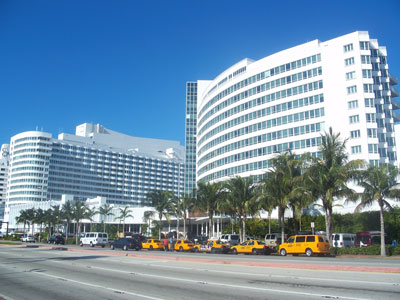
Ebyabe, CC BY-SA 3.0, via Wikimedia Commons; Image Size Adjusted

Fontainebleau Miami Beach
Luxury hotel located on Collins Avenue in Miami Beach opened in 1954
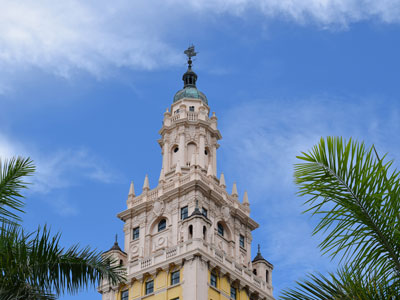
© Radomianin / Wikimedia Commons / CC BY-SA 4.0, Public domain, via Wikimedia Commons; Image Size Adjusted
,_NE_view.jpg){kind=link}
Freedom Tower at Miami Dade College
Building currently used as a contemporary art museum and office to different disciplines in the arts designated a U.S. National Historic Landmark for its role in hosting services for processing Cubans fleeing to Florida
2GroveIsleroo, CC BY-SA 4.0, via Wikimedia Commons; Image Size Adjusted
Historic Virginia Key Beach Park
A historic waterfront park featuring a sandy beach, recreational amenities, cultural landmarks, nature areas, and a legacy tied to the history of segregated recreation in South Florida.
Holocaust Memorial Miami Beach
Holocaust memorial in Miami Beach, Florida

Key West
Island in the Straits of Florida with the Key West Historic District including the major tourist destinations of Mallory Square, Duval Street, the Truman Annex and Fort Zachary Taylor
Lincoln Road
Mall located in Miami Beach that hosts shops, restaurants, galleries, and other businesses
2GroveIsleroo, CC BY-SA 4.0, via Wikimedia Commons; Image Size Adjusted
Little Haiti
A vibrant cultural district known for its Caribbean heritage, colorful murals, art galleries, music, markets, restaurants, and thriving community traditions.

Sharon Hahn Darlin, CC BY 2.0, via Wikimedia Commons; Image Size Adjusted

Little Havana
Neighborhood home to many Cuban exiles, as well as many immigrants from Central and South America, noted as a center of social, cultural, and political activity in Miami
2GroveIsleroo, CC BY-SA 4.0, via Wikimedia Commons; Image Size Adjusted
Lowe Art Museum
An art museum featuring an extensive collection of global artwork spanning thousands of years, with galleries dedicated to ancient cultures, European masters, Asian art, contemporary works, and traveling exhibitions.
Matheson Hammock Park
Waterfront park featuring a man-made atoll pool, sandy beach, coastal trails, marina facilities, and scenic views of Biscayne Bay.
2GroveIsleroo, CC BY-SA 4.0, via Wikimedia Commons; Image Size Adjusted
Miami Design District
An upscale mixed-use neighborhood featuring luxury boutiques, contemporary art installations, award-winning architecture, fine dining, public spaces, and a concentration of leading international fashion and design brands.
2GroveIsleroo, CC BY-SA 4.0, via Wikimedia Commons; Image Size Adjusted
Museum of Miami
Regional history museum preserving and sharing the stories, people, cultures, and events that shaped one of America's most diverse and influential metropolitan communities.
2GroveIsleroo, CC BY-SA 4.0, via Wikimedia Commons; Image Size Adjusted
Patricia and Phillip Frost Art Museum
A modern art museum featuring diverse collections of contemporary, American, Latin American, African, and sculpture works alongside rotating exhibitions and educational programs.
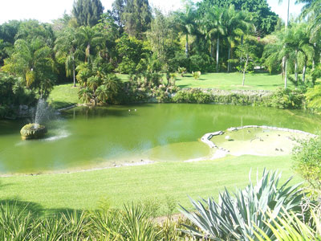
Ebyabe, CC BY-SA 3.0, via Wikimedia Commons; Image Size Adjusted

Pinecrest Gardens
20-acre park in Pinecrest, Florida was the original location of the Parrot Jungle, a theme park started in 1936, now turned it into a dedicated municipal park
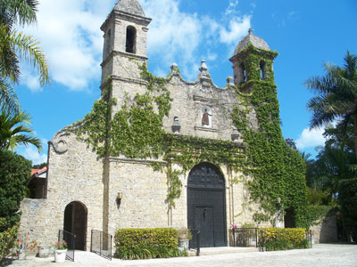
Ebyabe, CC BY-SA 3.0, via Wikimedia Commons; Image Size Adjusted

Plymouth Congregational Church
Historic church located in the Coconut Grove neighborhood of Miami, built by a single man, Felix Rebom, using only a hatchet, a trowel, a plumb line, and a T-square
2GroveIsleroo, CC BY-SA 4.0, via Wikimedia Commons; Image Size Adjusted
Rickenbacker Trail
Paved multi-use pathway connecting coastal parks, beaches, marinas, and scenic waterfront viewpoints while offering sweeping views of Biscayne Bay and the Miami skyline.
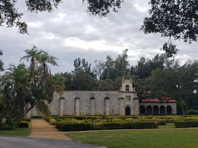
Jeff P from Berkeley, CA, USA, CC BY 2.0, via Wikimedia Commons; Image Size Adjusted
.jpg){kind=link}
St. Bernard de Clairvaux Church / Ancient Spanish Monastery
Medieval Spanish monastery cloister which was built in the town of Sacramenia in Segovia, Spain, in the 12th century but dismantled in the 20th century and reassembled in North Miami Beach

South Beach
Neighborhood in Miami Beach, including Ocean Drive, known mostly for its Art Deco hotels and restaurants/bars, many of which have been prominently featured in numerous movies and media

South Pointe Park and Pier
17-acre park and promenade that features a kids area, plenty of lush lawn for picnics, hills and walkways for outdoor exercising, and direct access to the beach
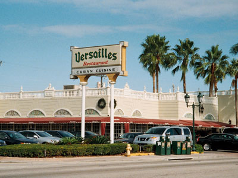
Phillip Pessar, CC BY 2.0, via Wikimedia Commons; Image Size Adjusted

Versailles Restaurant Cuban Cuisine
Cafeteria, restaurant, and bakery located in Little Havana is a popular restaurant among local Cuban exiles and tourists for its Cuban cuisine

Vizcaya Museum and Gardens
Former villa and estate of businessman James Deering, on Biscayne Bay, that includes extensive Italian Renaissance gardens, native woodland landscape, and a historic village outbuildings compound
Wynwood Walls
Unique outdoor destination featuring huge, colorful street murals by artists from around the globe
Overview
Miami is a vibrant, international city on Biscayne Bay in southeastern Florida, between the Everglades and the Atlantic Ocean. The city has about half a million residents, and the greater Miami metropolitan area has more than six million. Often called the "Magic City" for its fast growth, it is famous for its beaches, Art Deco architecture, nightlife, Latin American and Caribbean culture, world-class dining and year-round warmth. It is a leading center of international trade, finance and tourism, a gateway to Latin America and the Caribbean, and home to PortMiami, the "Cruise Capital of the World." It has the largest Cuban-American population in the country, and a majority of residents speak Spanish at home, giving the city a distinct bilingual, multicultural character.
People come to Miami to relax on the sand, stroll the Art Deco district of South Beach, eat Cuban food in Little Havana, see colorful street art in Wynwood, party at some of the country's most famous clubs and festivals, shop at luxury malls and the Design District, and board a cruise ship to the Caribbean. It is also the jumping-off point to the Everglades, Biscayne National Park and the Florida Keys, which makes it an ideal base for a Florida vacation. The city has appeared in countless films and shows, including Miami Vice, Scarface and Bad Boys, adding to its glamorous image.
For roughly 2,000 years the Tequesta people lived along Biscayne Bay and the Miami River. Spanish explorers arrived in the 16th century, and the area remained a remote frontier through the Seminole Wars of the 19th century. Modern Miami began in the 1890s when Julia Tuttle, a local landowner often called the "Mother of Miami," persuaded railroad magnate Henry Flagler to extend his Florida East Coast Railway south, and the city was incorporated in 1896. A real-estate boom in the 1920s, led by developers such as Carl Fisher, who dredged the sandbars of Miami Beach, ended with the devastating 1926 hurricane and the Great Depression. Tourism and military activity during World War II fueled a second boom, and from 1959 on, waves of Cuban exiles, followed by Haitians, Nicaraguans, Venezuelans, Colombians and others, transformed Miami into an international city. The 1980s brought the Miami Vice era and a rise in the city's profile, Hurricane Andrew struck in 1992, and Miami has since become a skyline of glass towers and a hub for finance, technology and the arts.
Miami Beach, a separate city on a barrier island across Biscayne Bay, has about seven miles of broad, white sand beach. Its southern tip, South Beach, is known as "SoBe," and is home to the Miami Beach Architectural District, a collection of roughly 800 buildings from the 1920s to 1940s in Art Deco, Streamline Moderne and Mediterranean Revival styles, saved from demolition by preservationists in the 1970s. Pastel-colored hotels such as the Colony, Carlyle and Park Central line Ocean Drive, and the Art Deco hotels glow with neon at night. Nearby are the pedestrian shopping street Lincoln Road, Spanish-style Española Way, South Pointe Park, the former Versace mansion (Villa Casa Casuarina), the Holocaust Memorial and the landmark mid-century Fontainebleau hotel. Further north, Mid-Beach and Bal Harbour are known for resorts and luxury shopping.
Miami has a tropical climate, with warm temperatures all year. The dry season runs from about November through April, with sunny days, highs in the mid-70s to low 80s °F and comfortable humidity, making it the most popular and expensive time to visit. The wet season runs from May through October, with hot, humid weather, highs in the low 90s °F and daily afternoon thunderstorms, usually brief. The Atlantic hurricane season runs from June 1 to November 30, with the greatest risk from August through October, so travelers in that period should watch forecasts and consider travel insurance. Heat advisories, rip currents, and seasonal seaweed on the beaches can also affect plans, and high tides can flood low-lying streets in Miami Beach. Although winters are mild, the ocean is cool enough for a chill in January, while the water is bathtub-warm in summer.
Little Havana is the cultural heart of Miami's Cuban community and one of the city's most popular neighborhoods. Its main street, Calle Ocho (SW 8th Street), is lined with Cuban cafés, cigar shops, galleries, murals and the Walk of Fame. Visitors drink strong cafecito at walk-up windows (ventanitas), watch hand-rolled cigars being made, listen to live Cuban music, and see old men playing dominoes at Máximo Gómez Domino Park. Do not miss Versailles, a famed Cuban restaurant, and the Torch of Friendship (Antorcha de la Amistad) monument. The Viernes Culturales (Cultural Fridays) block party takes place on the last Friday of each month, and the Calle Ocho Festival draws huge crowds in March. Nearby, Little Haiti celebrates Haitian culture with galleries, food and music.
Three national parks lie within reach of Miami. Everglades National Park, about an hour southwest, protects the largest subtropical wilderness in the United States, a "river of grass" where visitors can see alligators, manatees, wading birds and crocodiles from boardwalks, trails, airboats and guided boat tours. Biscayne National Park, south of the city, is about 95% water and offers coral reefs, mangrove shorelines and snorkeling, diving and boat tours. Farther out, Dry Tortugas National Park, about 70 miles west of Key West and reached by ferry or seaplane, protects the huge brick Fort Jefferson and pristine reefs. Big Cypress National Preserve adds swamps and wildlife viewing along the Tamiami Trail.
The Florida Keys are a chain of tropical islands that stretch about 120 miles southwest from the mainland, linked by the Overseas Highway (US-1), which crosses 42 bridges, including the famous Seven Mile Bridge. Highlights include snorkeling and diving at John Pennekamp Coral Reef State Park, beaches at Bahia Honda State Park, fishing, kayaking and Key lime pie. At the end of the road is Key West, about 160 miles and 3.5 to 4 hours from Miami, with its laid-back island attitude. Popular stops include Duval Street, the sunset celebration at Mallory Square, the Ernest Hemingway Home, the Southernmost Point Buoy, the Harry S. Truman Little White House and the Key West Lighthouse. The Keys make a great overnight or weekend side trip.
Beyond the beach, top attractions include Vizcaya Museum and Gardens, an Italian Renaissance-style villa on Biscayne Bay; Coconut Grove, a leafy bayfront village with the Barnacle Historic State Park; Coral Gables, with the Venetian Pool and the landmark Biltmore Hotel; Wynwood Walls; the Miami Design District; Bayside Marketplace and the Freedom Tower, which welcomed Cuban refugees. Also visit the Cape Florida Lighthouse, the oldest structure in Miami-Dade County, the mysterious Coral Castle in Homestead and the Deering Estate. Boat tours of Biscayne Bay pass by the mansions of Star Island and the ships at PortMiami.
Miami is a major arts city. Every December, Art Basel Miami Beach attracts collectors and celebrities from around the world and hundreds of satellite events, and the Wynwood Arts District is covered in murals. Leading museums include the Museum of Miami, the Lowe Art Museum, the Patricia and Phillip Frost Art Museum, the Pérez Art Museum Miami, the Phillip and Patricia Frost Museum of Science, the Institute of Contemporary Art, the Bass, the Rubell Museum and the Wolfsonian. The Adrienne Arsht Center for the Performing Arts, the New World Symphony and the Miami City Ballet bring music and dance, while festivals such as Ultra Music Festival, the Miami Film Festival and the Calle Ocho Festival celebrate the city's creative and Latin culture. The Little Haiti Cultural Complex and the Holocaust Memorial reflect the city's diverse history.
Miami's parks mix beaches, tropical forests and bayfront green space. Bill Baggs Cape Florida State Park and Crandon Park on Key Biscayne have some of the best beaches and walking trails, and Historic Virginia Key Beach Park preserves a Black-only beach from the segregation era. Matheson Hammock Park has a man-made atoll pool and tropical hardwood hammock, Fairchild Tropical Botanic Garden is one of the best in the world, and Pinecrest Gardens, South Pointe Park and the Rickenbacker Causeway trail are popular for walking and cycling. Bayfront Park, in downtown Miami, hosts concerts and events.
Miami has one of the best and most varied food scenes in the country. The Michelin Guide began covering Florida in 2022 and has awarded stars to Miami restaurants, including Stubborn Seed, Cote Miami, a Korean steakhouse, and L'Atelier de Joël Robuchon, alongside a growing list of Bib Gourmand picks, and celebrity chefs have opened outposts across the city. Cuban food is the signature cuisine, with the Cuban sandwich, ropa vieja, croquetas, pastelitos and cafecito, and the city's Latin American mix includes Peruvian ceviche, Argentine steakhouses, Venezuelan arepas, Colombian bakeries and Brazilian churrascarias. Haitian and Caribbean food is found in Little Haiti and fresh seafood is everywhere, with Joe's Stone Crab, open since 1913, serving stone crab claws from mid-October to May. "Floribbean" cuisine, a fusion of Florida ingredients with Caribbean flair, was pioneered in Miami, and Key lime pie and mojitos are local classics.
Miami has teams in the major professional leagues. The Heat (NBA), winner of three championships (2006, 2012 and 2013), play at Kaseya Center downtown. The Dolphins (NFL), who completed the NFL's only perfect season in 1972, play at Hard Rock Stadium in Miami Gardens, which also hosts the Miami Grand Prix, the Miami Open tennis tournament, Super Bowls and matches of the 2026 FIFA World Cup. The Marlins (MLB), two-time World Series champions, play at loanDepot park in Little Havana. Inter Miami CF (MLS), co-owned by David Beckham and featuring Lionel Messi since 2023, plays in Fort Lauderdale. The Florida Panthers (NHL), Stanley Cup champions in 2024 and 2025, play in nearby Sunrise. In college sports the University of Miami Hurricanes are a nationally known football program.
Sources: This article uses material from the Wikipedia articles "Miami", "History of Miami" and "Miami Beach, Florida", which are released under the Creative Commons Attribution-Share-Alike License 3.0. Additional information from the Greater Miami & Miami Beach Convention & Visitors Bureau, the National Park Service: Everglades, Biscayne and Dry Tortugas, the Florida Keys & Key West tourism council, the National Weather Service Miami, the National Hurricane Center, the Michelin Guide Florida, the City of Miami Beach and the official websites of the attractions, museums and teams mentioned.
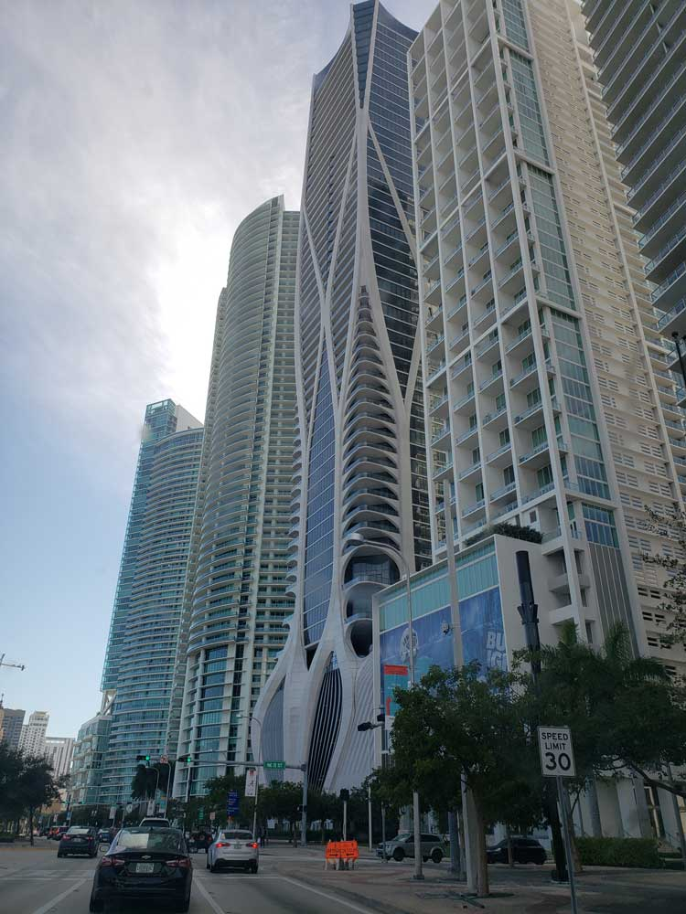
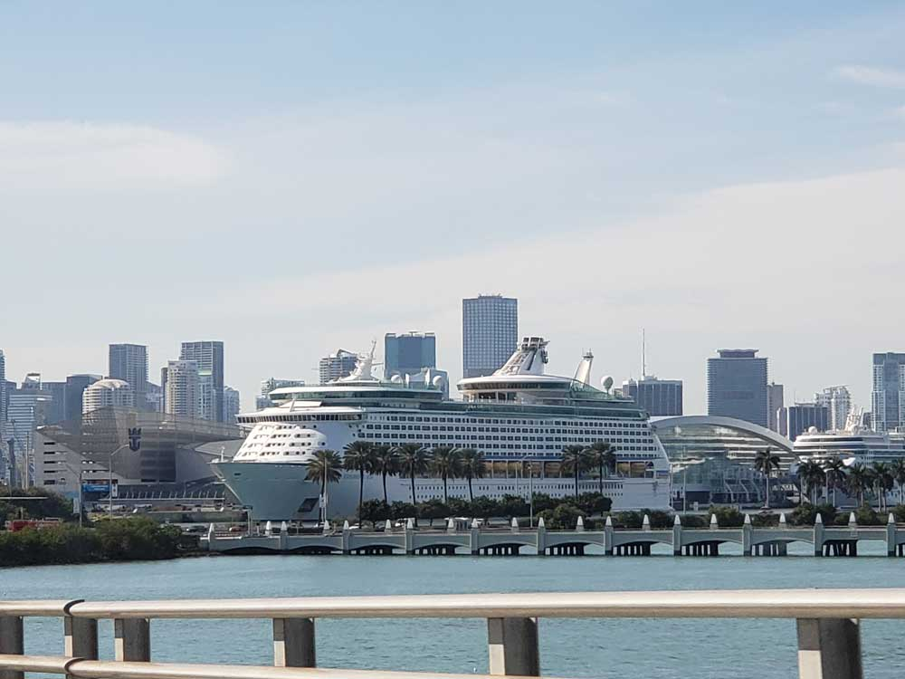
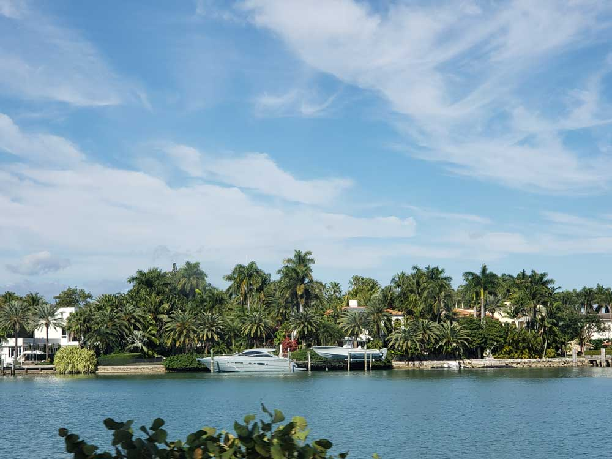